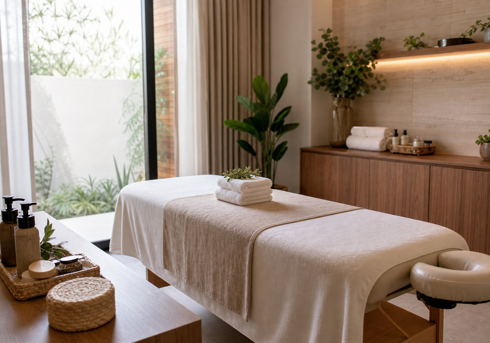

Serviços públicos
A página reúne apenas o que apareceu em fontes públicas ou diretórios.
Saúde e terapias em Vila Velha
Conceito visual para transformar links soltos em uma página com serviços, bairro e chamada para contato.

Quem procura pelo celular precisa entender rápido o que o negócio atende, onde fica e como chamar. Este demo mostra esse caminho sem copiar fotos privadas nem prometer resultado clínico.
Informações públicas
Os blocos abaixo usam dados públicos e pontos seguros. Antes de publicar como site oficial, tudo deve ser confirmado pelo Evolução Centro de Saúde.
A página reúne apenas o que apareceu em fontes públicas ou diretórios.
Telefone e caminho de contato ficam no topo e no fim da página.
A equipe pode ajustar serviços, horários e endereço antes de qualquer publicação.
O site reduz a dependência de Linktree, Doctoralia ou diretórios.
Saúde e contato
Usa Linktree e Doctoralia. Oportunidade de site próprio.
Status do site: Social only
Site atual: Link atual encontrado
Social: Canal público encontrado
Confiança da pesquisa: High
Como marcar
A pessoa entende o tipo de atendimento em uma leitura curta.
Confere área e telefone sem abrir outra plataforma.
O negócio confirma serviços e agenda pelo canal oficial.
Contato público
O endereço completo precisa ser confirmado pelo negócio antes da publicação oficial. Por enquanto, a página mostra a área encontrada em fonte pública.
Praia da Costa, Vila Velha/ES
Conceito visual não oficial.
Ligar agora Abrir WhatsAppTransparência
Não. É um conceito visual criado para demonstrar como uma página própria poderia organizar informações públicas.
Sim. Serviços, horários, endereço completo, convênios e fotos devem ser revisados pelo negócio antes de publicar.
Não. A imagem é neutra e não mostra pacientes, profissionais ou ambiente real do lead.